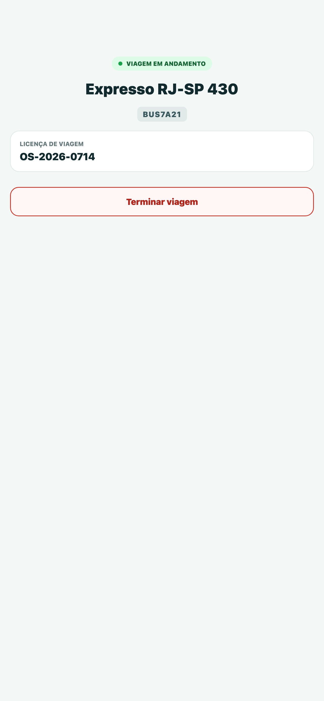

GPS em segundo plano
Rastreamento contínuo da viagem mesmo com a tela do celular bloqueada ou em uso com outros aplicativos.
Aplicativo oficial fornecido pela Nogartel para frotas de transporte rodoviário de passageiros. Inicie a viagem, deixe o GPS trabalhar em segundo plano e registre embarques e ocorrências operacionais mesmo sem conexão.


Rastreamento contínuo da viagem mesmo com a tela do celular bloqueada ou em uso com outros aplicativos.
As posições de GPS ficam armazenadas em fila segura no aparelho e são sincronizadas assim que a conexão retorna.
Registre passageiros embarcados, paradas e eventos operacionais exigidos no acompanhamento da viagem.
Exporte as evidências operacionais da viagem em JSON para conferência, suporte técnico ou integração.
O Monitriip Driver é comercializado pela Nogartel para empresas de ônibus, fretamento e transporte rodoviário coletivo de passageiros que precisam cumprir os requisitos operacionais do Monitriip (ANTT) com praticidade para o motorista e confiabilidade na transmissão de dados.